Appearance: She has brown hair and brown eyes. Similar to Sorata's hair and eye colour. She has a short bob hair cut with curtain type? bangs
His name is 神田 明子. Her birthday is May 13th. She is voiced by Satomi Arai
Personality:
She is the mother of Sorata Kanda and Yuuko Kanda. She loves to exaggerate things her explanations to add a sense of humour to the things she say. She cares a lot for her children and would do anything for them
She has relationships with Yuuko Kanda, Sorata Kanda and Mr Kanda
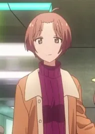
Appearance: He has brown hair and brown eyes. A darker color compared to Sorata and Akiko. His hair has a center parting and he has a steern face.
His name is 神田. His birthday is November 14th. He is voiced by Tooru Ookawa
Personality:
He is the father of Sorata and Yuuko. He is very stern and fierce, despite this he strongly cares for his children but struggle to show his true feelings. He strongly follows his ideals. Like Akiko, he loves teasing Sorata.
He has relationships with Yuuko Kanda, Sorata Kanda and Akiko Kanda
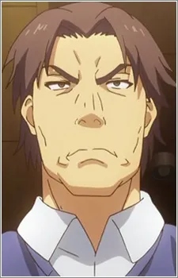
Appearance: Since she is young, she is still quite short. She has brown hair and eyes just like Sorata. She has nape-long hair that is parted at the center.
Her name is 神田 優子. Her birthday is July 1st. She is voiced by Yui Ogura
Personality:
She is the sister of Sorata Kanda. She has a major brother-complex, as in she loves her brother a lot, to the state where its more like as a romantic interest. She is extremely clingy and often jumps to conclusion. She is insecure about her body and often compares herself to Aoyama and Shiina
She has relationships with the people of the Sakurasou Dorm and her family, Sorata Kanda and Akiko Kanda and Mr Kanda
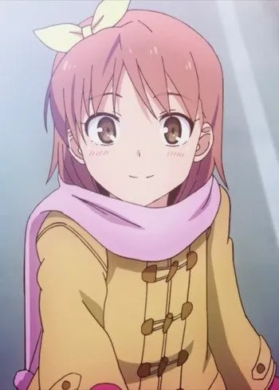
Appearance: He has gray hair and grayish hair. He has an average build and height. His hair is messy and has uneven bangs
His name is 宮原 大地. His birthday is unknown. He is voiced by Taishi Murata
Personality:
HE is a kind and helpful friend and very honest. He confessed to Aoyama but got rejected. Nonetheless he stayed a good friend to her, though may be affected by these feelings.
His mainly known relationships are with his classmates such as Sorata & Aoyama
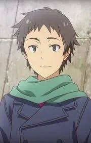
Appearance: She has a slender figure. She has average height with dark red hair with dark red eyes.She has nape long hair with a parting more towards the left.
Her name is 千石 千尋. Her birthday is May 25th. She is voiced by Megumi Toyogochi
Personality:
Despite being a teacher, she mainly cares only to go on dates and drink beer. She is extremely lazy and often gives bad advice to the students in Sakurasou. However she cares a lot for them as seen through many of her acts. She doesn't care about being modest/decent.
Her mainly known relationships are with Mashiro as her cousin, with Sorata as his teacher and Kazuki Fujisawa as his classmate
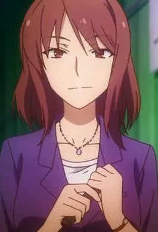
Appearance: She has short greenish hair and brown eyes. Her hairstyle is styled in a way where the hair looks more like feelers and reveal her forehead, similar to Akiko Kanda.
Her name is 飯田 綾乃. Her birthday is unknown and she is voiced by Masumi Asano
Personality:
She is a nice and happy person. She is positive at times and is also frank at times. She helps the people she knows all the time, for example Mashiro with her life and/or her manga.
Her known relationship is with Mashiro as her editor and advisor. She has also had a few interactions with Sorata
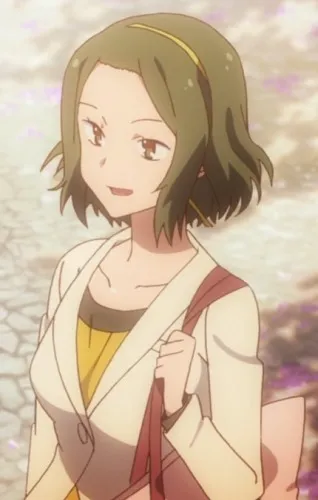
Appearance: Her face is extremely similar to Misaki Kamiigusa
Her name is 上井草 風香. Her birthday is in August 8th. She is voiced by Saori Hayami
Personality: Not much is known about her, except she is a nice older sister to Misaki and is the ex girlfriend of Jin Mitaka
Her known relationships are with Misaki and Jin
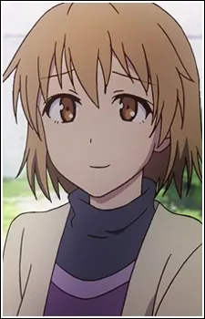
Appearance: She has short dark green hair and brown eyes, her bangs are parted from the right. She often carries around headphones with her nickname, HauHau, on them.
Her name is 姫宮 沙織. Her birthday is on January 7th and she is voiced by Ayumi Fujimura
Personality: She is a nice friend to Misaki, often helping her but she isn't shown much in the anime.
Her relationships are with Iori Himemiya as his sister and with Misaki as she makes music for Misaki's anime.She is also Souichirou Tatebayashi's girlfriend.
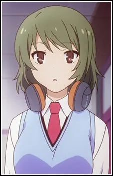
Appearance: She has a masculine face, her hair is blonde and normally tied up in a ponytail. She has small black eye pupils.
Her name is 難波 しおり. Her birthday is unknown and she is voiced by Sachiko Kojima
Personality: She is a driving instructor. She is very fearful of driving with Misaki, as knowing Misaki, her manner of driving is quite reckless. She was shown very less during the anime
Her relationships known is with students of Suiko and Misaki
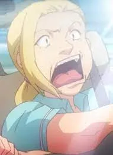
Appearance: He has an average build and height. He has black messy short hair thats parted at the right. He wears rectangle glasses.
His name is 舘林 総一郎. His birthday is June 27th. He is voiced by Satoshi Hino
Personality: He is the student council president. He is shown to hate Jin Mitaka but actually cares a lot for him and is his good friend. His cold figure is mainly fake and he actually concerns about everyone close to him.
He is Saori Himemiya's boyfriend and good friends with Jin
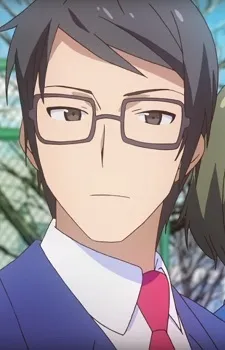
Appearance: She has long blonde hair, and light blue eyes. She has a face similar to Mashiro. She is taller as compared to Mashiro
Her name is リタ エインワーズ. Her birthday is April 4th. She is voiced by Ayako Kawasumi
Personality: Rita is a good painter, second to Mashiro. Rita is a firm believer of chivalry and she imposes onto the members of Sakurasou.She is very determined and doesn't give up after failure. She cares a lot for the other Sakurasou Residents.
Relationships:
Ryuunosuke : She initially hates him, but after awhile starts to admire and like him due to his intelligence. She occasionally argues with him but also cares for him the most
Maid: She is jealous of Rita's advances on Ryuunosuke.Maid often intercepts Rita's calls and emails, but at the same time revealed Ryuunosuke's past to her even though it was against Maid's code.
Mashiro: Rita has a love/hate relationship with Mashiro. Rita loved Mashiro and deeply cared for her. However, Rita also hated Mashiro. As to her Mashiro looked listless and only cared about herself. However, overall Rita will always love Mashiro
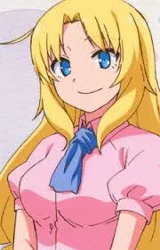
Appearance: A small girl in a maid outfit, with short pink hair and a cable coming out her neck.
She is a female AI, a.k.a メイド. Its unknown when she was created but she is voiced by the same voice actor of Ryuunosuke
Personality: As an AI, she started learning more about emotions and et cetera, even able to display anger and hatred to others. She works for Ryuunosuke, helping him send messages,emails and et cetera. Basically anything related to social media. She often helps Sorata with game development advice, et cetera
She has relationships with all members of Sakurasou and Rita
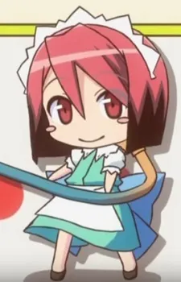
Appearance: She has long brown hair and brown eyes. Her hair parts in the middle and is normally not tied up
Her name is 桃子 and she is voiced by Nao Toyama
Personality: She is a nice person and helps Aoyama when she needs help. She is a professional voice actor so is able to provide Aoyama with tips and tricks
She has a close relationship with Aoyama
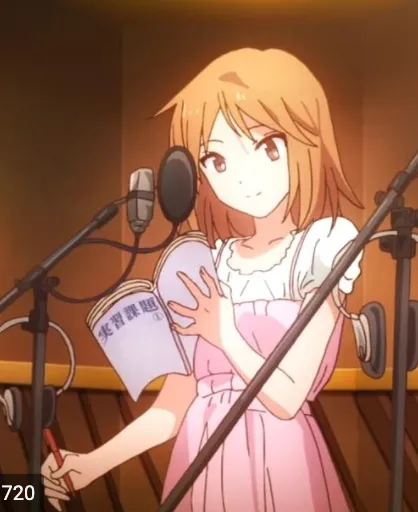
Appearance: He has average height and build. He has gray hair thats parted at the right with gray eyes. he often wears a scarf and rectangualr glasses
His name is 藤沢 和希. He is voiced by Shintaro Asanuma
Personality: He is helpful senior. He was from Sakurasou with Chihiro Sengoku. He always helps Sorata with his game design et cetera He is cheerful all the timee and is very nice to the current Sakurasou residents
He used to like Chihiro Sengoku when they lived in Sakurasou. He speaks with to help him with his game design.
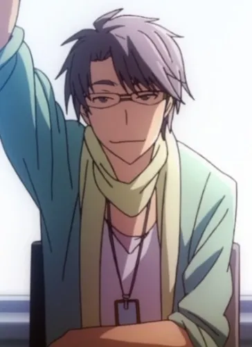
Appearance: She has shoulder length black hair with straight bangs. She has blue eyes and oval glasses.
Her name is 長谷 栞奈. Her voice actor is Haruka Yamazaki
Personality: She is extremely studious and cannot stand living around noisy people.To the extent where, she moved into Sakurasou to avoid a noisy roommate
\
She is the new member of Sakurasou at the end of anime
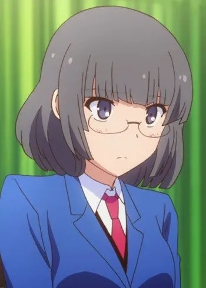
Appearance: He has goldish brown messy hair and also goldish brown eyes. Just like his sister Saori Himemiya, he wears headphones around his neck, which was a present from his sister.
His name is 姫宮 伊織. His birthday is May 17th. His voice actor is Nobunaga Shimazaki
Personality: He is loud and noisy, just like a young teenager. He is extremely perverted, which was the main reason he got kicked to Sakurasou, as he was peeking in the girls' bath.
He is the new member of Sakurasou at the end of anime.
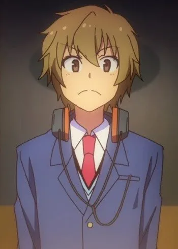